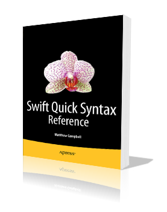
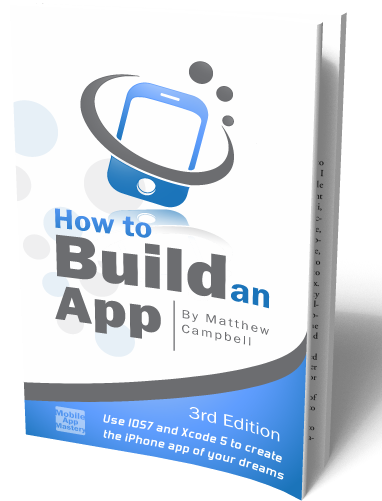
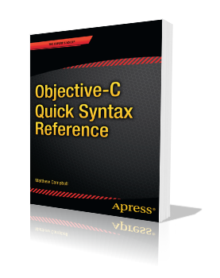
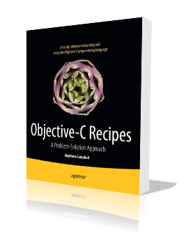

@MattjCamp
iPhone Apps ● Data Science ● Online Business

Swift Quick Syntax Reference
Swift Quick Syntax Reference is a 120-page condensed code and syntax reference to the new Apple Swift programming language, which is the alternative language to Objective-C behind the APIs found in the Apple iOS 8 and Mac OS Yosemite SDKs. It presents the essential Swift syntax in a well-organized format that can be used as a handy reference.

How to Build an App
Learn how to build an app using the latest iOS 7 and Xcode 5 best practices and patterns. Master design patterns like Model-View-Controller and Delegation while coding your own version of the NoteMaker app. Based on training materials developed over the past five years that have successfully trained hundreds of new iOS developers.

Objective-C Quick Syntax Reference
The
Objective-C Quick Syntax Reference is a condensed code and syntax reference to the popular Objective-C programming language, which is the core language behind the APIs found in the Apple iOS and Mac OS SDKs. It presents the essential Objective-C syntax in a well-organized format that can be used as a handy reference.

Objective-C Recipes
Objective-C Recipes provides a problem solution approach for dealing with key aspects of Objective-C programming, ensuring you have the indispensable reference you need to successfully execute common programming tasks.